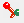
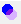
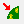

Overview | ↓
MMM visualizes proteins and cofactors in common display formats, such as ribbon models, stick models, space-filling models or wire models. In addition, density cubes and bilayers can be visualized. For spin labels a special visualization mode displays only the midpoints of N-O bonds as spheres with the sphere radius encoding population of spin label conformations (rotamers). Possible localizations of spin labels with respect to a reference structure or with respect to each other (networks) can also be visualized. During development of MMM, further visualization modes will be added.
By default, MMM displays a ribbon model of a protein with color according to secondary structure and does not display cofactors after loading a PDB file. When opening a model that was stored in MMM format, the previous appearance of the model is restored.
Interactive visualization requires that objects are selected by one of the standard selection methods. The display mode can then be selected via the Graphics mode toolbutton or the Display/3D display mode menu item.
Objects can be addressed and visualized at once via the show command.
Binding sites can be selected and visualized using the sites window.
MMM allows for assigning colors to each individual object or to several selected objects at once by color name, from a palette, or by direct input of RGB (red/green/blue) color codes.
Color assignment to selected objects is possible via the Color toolbutton or the Display/Color menu item.
In the same way color schemes can be assigned, such as color by chain, by sequence, by B factor, or by charge.
Without previous selection, color can be assigned by the the color command or a color scheme by the the colorscheme command.
For each individual object or several selected objects a transparency between 0 (fully transparent, invisible) and 1 (fully opaque) can be selected. Transparency values smaller than zero correspond to default transparency, which is opaque, unless alternate conformations are specified. In the latter case the transparency value corresponds to the population of the conformation.
Transparency assignment to selected objects is possible via the Transparency toolbutton or the Display/Transparency menu item.
Without previous selection, transparency can be assigned by the the transparency command.
MMM can automatically zoom in on selected objects. Use the zoom in command or the View selected toolbutton or the Display/View selection menu item.
A better 3D impression can be obtained with emulated depth cueing. Note that this does not mix well with object transparency.
To speed up the user interface and interactive rotation, zoom, and pan of 3D graphics, atom graphics can be temporarily reduced or switched off.